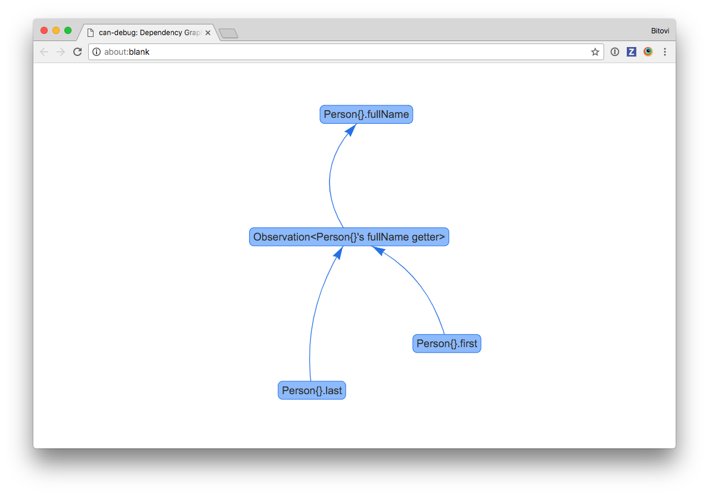

Debugging Guide
Learn how to debug CanJS applications.
CanJS has many utilities that help you understand how an application behaves and discover common problems. This guide is a central list for those utilities. It introduces those utilities and highlights when they are useful.
Setup Debugging
CanJS does not have a global export; instead, every module must be imported. While this
improves longevity, it makes access to debugging utilities difficult. The can-debug
project adds a can object to the global window, making all of CanJS's packages
available.
For example, can-queue's logStack method can be called like:
import queues from "can-queues";
queues.logStack();
However, if any part of your application imports can-debug, you can log the stack like:
can.queues.logStack()
NOTE: When first accessing properties on the global
can, a warning will be logged. This is to discourage relying on the globalcanobject.
Therefore, it's useful to import can-debug only in development. The following shows how to set this up for Webpack and StealJS:
StealJS setup
StealJS supports two ways of loading can-debug only in production:
//!steal-remove-startcomments- conditional modules
Using steal-remove-start comments
Add the following to your main module:
//!steal-remove-start
import can from "can-debug";
//!steal-remove-end
Conditional loading
Conditional loading makes it possible to load a module only when another module export true. To start, we'll create an is-dev module:
// is-dev.js
export default !steal.isEnv("production");
Then we can conditionally load modules like:
import can from "can-debug#?~is-dev";
WebPack Setup
To import the debug module only in development, add the following code to your main module:
if (process.env.NODE_ENV !== "production") {
require("can-debug");
}
Then, make sure process.env is defined in webpack.config.js
with the following:
var webpack = require("webpack");
module.exports = {
...
plugins: [
new webpack.DefinePlugin({
"process.env": {
NODE_ENV: JSON.stringify("production")
}
})
]
};
Provide useful debugger names
CanJS tries to create useful names to help identify the objects and functions in your application. It uses can-reflect's getName to return a useful debugger name. By default objects are named using the following convention:
- The name starts with the observable constructor name, ex:
DefineMap. - The constructor name is decorated with the following characters based on its type:
<>: for value-like observables, ex:SimpleObservable<>[]: for list-like observables, ex:DefineList[]{}: for map-like observables, ex:DefineMap{}
- Any property that makes the instance unique (like ids) are printed inside the characters mentioned before.
You can assist by naming your types and functions wherever possible. The follow sections list how:
Provide a name to types built with can-construct
If you are using can-map, can-define/map/map or any other package that inherits from can-construct,
name your function by passing .extend a name as the first argument:
import DefineMap from "can-define/map/map";
export default DefineMap.extend("TheNameOfMyType", { ... })
Label instances
can-reflect's setName method can be used to uniquely name a particular object:
can.reflect.setName(person, "Person{Justin}");
Name anonymous functions
If you bind to an observable, instead of an anonymous function handler, use function declarations or named function expressions:
// INSTEAD OF THIS:
map.on("key", function(ev, newVal) { ... })
// DO THIS:
map.on("key", function keyChanged(ev, newVal) { ... })
Similarly, if you create can-computes or can-observations yourself, make sure the function passed has a name:
// INSTEAD OF THIS:
new Observation(function(){
return map.first + " " + map.last;
});
// DO THIS:
new Observation(function fullName(){
return map.first + " " + map.last;
});
NOTE: If your function is a property on an observable map or list like can-define/map/map, you don't have to name it. For example, CanJS will name the
fullNamegetter in the following example:DefineMap.extend("Person",{ fullName: { get: function(){ return this.first + " " + this.last; } } })
Debug what caused a observable event or update to happen.
Your browser's developer tools provide a stack trace that represents what caused the current function to run.
However, what caused a function to run isn't always obvious by looking at the stack trace because CanJS runs functions within can-queues.
Consider the following code that derives an info value from the person observable:
var person = new observe.Object({name: "Fran", age: 15});
var info = new Observation(function updateInfo(){
return person.name + " is " + person.age;
});
info.on(function onInfoChanged(newVal){
debugger;
})
person.age = 22;
Say you wanted to know why onInfoChanged was called, so you inserted the debugger above. When
the debugger was hit, you can enter logStack in the console to see the enqueued tasks that resulted
in onInfoChanged being run:
can.queues.logStack();
The following video shows using logStack:
can.queues.log can be used to log when a task is enqueued and flushed. Often, you only want to log when tasks are run. This can be done with:
can.queues.log("flush")
Both queues.logStack() and queues.log() log the function
that was run, its context (this), arguments and a meta
object that includes information such as why the task
was enqueued.
Understand what changes an observable or what an observable changes.
can-debug's logWhatChangesMe logs the observables that change a value. It logs both:
- observables that mutate the value through CanJS libraries (example:
<component viewModelProp:from="value">). - observables that are source values from a computed property
(example:
get fullName(){ return this.first + " " + this.last }
You can log what changes CanJS observables and DOM elements:
can.debug.logWhatChangesMe(me, "fullName");
can.debug.logWhatChangesMe(document.querySelector("h1.name"));
can-debug's logWhatIChange reverses logWhatChangesMe and logs what observables are changed by an observable value:
can.debug.logWhatIChange(me, "first");
can.debug.logWhatIChange(document.querySelector("input[name=first]"));
Finally, drawGraph can draw these relationships in a graph like the following:

Access a component's view-model.
Use can-view-model to access a component's viewModel:
can.viewModel(document.querySelector("my-component"));
Log when an observable changes.
Most of CanJS's observables have a log method that can be used to log when its state changes:
map.log();
This can be quite useful when used with can-view-model:
can.viewModel(document.querySelector("my-component")).log();
CanJS's observable map-types like can-define/map/map can be passed a property name and log when that property changes:
map.log("property");
Debug can-stache issues
can-stache has two utilities for debugging:
- {{debugger()}} - Break within a template.
- console methods - Call the debugger console methods.
{{debugger()}} can be used a variety of ways:
Break anytime this part of the template evaluates
{{debugger()}}
Break when condition is truthy
{{debugger(condition)}}
Break when left equals right
{{debugger(left, right)}}
When debugger breaks, you have access to the scope and a special get function that lets you inspect values in the scope.
Stache templates also have access the console methods methods, making it easy to log value or even test performance.
{{#if tasksPromise.isResolved}}
{{ console.log("tasks resolved with", tasksPromise.value) }}
{{/if}}
console methods will be called whenever the template would normally update the
DOM. This means that count will be logged every second in the following component:
Component.extend({
tag: "my-counter",
view: `{{console.log(count)}}`,
ViewModel: {
count: {
value({resolve}) {
var count = resolve(0);
setInterval(() => {
resolve(++count);
}, 1000);
}
}
}
});